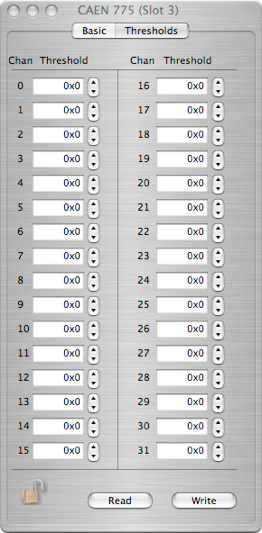
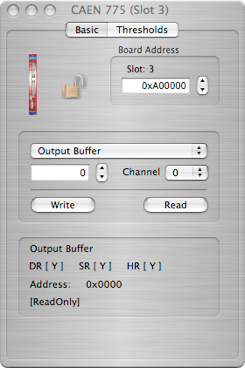
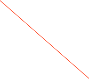
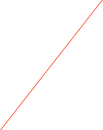

CAEN V775





Set the VME Address
Threshold values for each channel
The V775 is a 1-unit wide VME 6U module housing 32 Time-to-Digital Conversion channels. The Full Scale Range can be programmed via VME from 140 ns (35 ps LSB) to 1200 ns (300 ps LSB).
The board can operate both in COMMON START and in COMMON STOP mode. Each time interval between the COM signal and the input signal is converted to a voltage level by the TAC sections. The outputs of the TAC sections are multiplexed and subsequently converted by two fast ADC modules (5.7 µs conversion time). A sliding scale technique is employed to reduce the differential non linearity.
It has a 32 event buffer memory. The module works in A24/A32 mode; the data transfer occurs in D16, D32, BLT32/MBLT64 or CBLT32/CLT64 mode. Multicast commands also supported. Programmable zero and overflow suppression complete the features of the unit. The board can be equipped with a special circuitry (live insertion) which allows the User to insert (remove) it into (from) the crate without switching the power off.
The dialog has a page for basic operations and one for thresholds.
Please refer to the manual for more details.
V775 Data Record format
The data records for the CAEN cards is exactly as produced by the cards with the addition of a header that 'wraps' the data for ORCA. It is a variable length record. Only the long form is used. The format is:
xxxx xxxx xxxx xxxx xxxx xxxx xxxx xxxx
^^^^ ^^^^ ^^^^ ^^-----------------------Object ID (from header)
-----------------^^ ^^^^ ^^^^ ^^^^ ^^^^-n longs + 2
xxxx xxxx xxxx xxxx xxxx xxxx xxxx xxxx
^^^^ ^^^^-------------------------------spare
----------^^^^--------------------------crate
---------------^^^^---------------------card
--------------------^^^^ ^^^^ ^^^^ ^^^^-spare
n longs of data follow immediately. The format
is as described in the card's documentation except that the header is discarded.
Load the current set of thresholds into hardware
The card’s register list. the current operation will be applied to he selected register. See the documentation that came with the card for more information on each register


The write value and the channel to use
Operation to do on the selected register using the current set of values
Extra Info about the selected register
Read the values that are currently in hardware